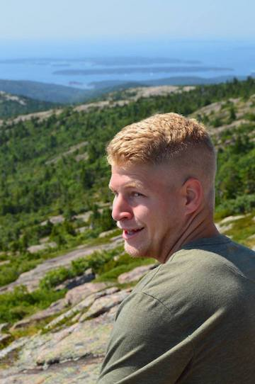

My name is Brendan Paul Harlan from Old Orchard Beach, Maine. I was born in Portland, Maine to parents George and Maureen Harlan. I am 5'8", 155 pounds. I have blond hair and blue eyes. I've grown up only having cats as pets (well a couple fish but they did not last long. However I have always wanted a dog. I grew up about 6 blocks from the beach so I always loved going to the beach and boogie boarding as a child. I attended Jameson Elementary School, Loranger Middle School, and Old Orchard Beach Highschool. Growing up I played baseball from the time I was 4 until my sophomore high school. I also played basketball, football, and track in high school. I worked for four years at Pier Fries in downtown Old Orchard Beach. I am now a second year Business Marketing major at The University of Maine, Orono.
